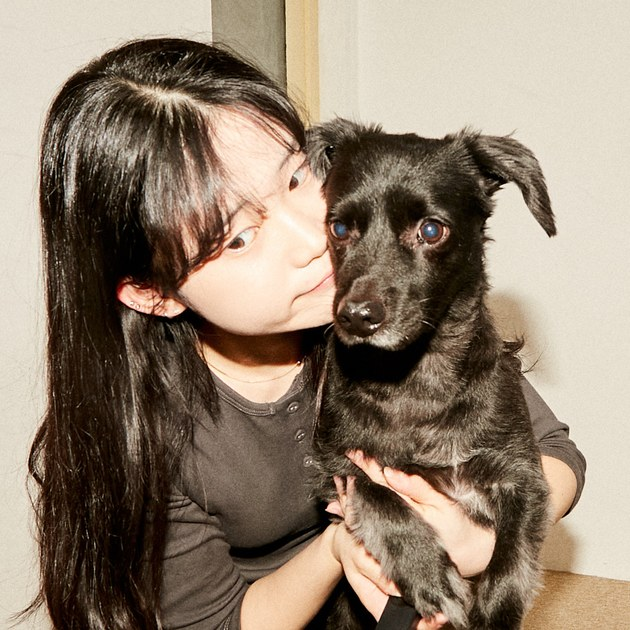

Under reviewPerception
Dynamic Steering of Layer-wise Uncertainty to Mitigate Hallucination in LVLMs
Ph.D. student, Soft Computing Lab,
Yonsei University
Advisor: Prof. Sung-Bae Cho
My research focuses on trustworthy multimodal AI across perception, reasoning, and agents.
Seeking research internships for Summer 2027

Perception
Perceiving accurately and faithfully
Hallucination, visual understanding
Reasoning
Reasoning reliably and consistently
Spatial reasoning, logical reasoning
Agents
Learning from failure, toward self-evolving agents
Failure attribution, orchestration in LLM multi-agent systems
* equal contribution
Dynamic Steering of Layer-wise Uncertainty to Mitigate Hallucination in LVLMs
BDI Architecture for Efficient Orchestration of LLM-based Multi-Agent Systems
Failure Attribution with Stepwise Uncertainty in Multi-Agent Systems
Spatial Reasoning in Large Vision-Language Models via Egocentric-to-Allocentric Transformation
Diagnosing Spatial Consistency across Perspectives and Viewpoints in Large Vision-Language Models
Hyperbolic Spatio-temporal Representation Learning for Unsupervised Video Anomaly Detection
Adaptive Beam Search with Shannon Entropy for Data-centric Reasoning in LLMs
Visual Question Answering: A Survey of Methods, Datasets, Evaluation, and Challenges
No papers under this topic yet.
FTT: Fourier Transform based Transformer for Brain CT Report Generation
Facial Expression Recognition using Visual Transformer with Histogram of Oriented Gradients
Facial Expression Recognition Robust to Occlusion using Spatial Transformer Network with Triplet Loss Function
Outside the lab, I love dogs, DJing, and watching movies.